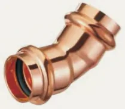

- Armatex
- Złączki zaciskane
- Łuk 45° ww GP5041
Besco · Miedź press, profil V · woda
Łuk 45° ww miedziany press, profil V GP5041
Łuk 45° ww z linii miedź press, profil V · woda: 8 rozmiarów od 12 × 12 do 54 × 54 mm. Zastosowanie: woda, ogrzewanie, przemysł. Norma EN 1254-7.
- Rozmiary
- 8
- Ciśnienie
- 16 bar
- Temperatura
- −10…110 °C

Rozmiary i numery artykułów
Źródło: katalog Besco 2026| Rozmiar | Nr artykułu | Worek | Karton | Lista |
|---|---|---|---|---|
| 12 × 12 | GP5041-12 | 10 szt. | 250 szt. | |
| 15 × 15 | GP5041-15 | 10 szt. | 120 szt. | |
| 18 × 18 | GP5041-18 | 10 szt. | 100 szt. | |
| 22 × 22 | GP5041-22 | 10 szt. | 60 szt. | |
| 28 × 28 | GP5041-28 | 5 szt. | 40 szt. | |
| 35 × 35 | GP5041-35 | 4 szt. | 20 szt. | |
| 42 × 42 | GP5041-42 | 2 szt. | 12 szt. | |
| 54 × 54 | GP5041-54 | 2 szt. | 8 szt. |
- Linia
- Miedź press, profil V · woda
- Zastosowanie
- woda, ogrzewanie, przemysł
- Norma
- EN 1254-7
- Aprobaty
- DVGWKIWAWRASRISE
- Nazwa w katalogu
- Bend 45° i/i
Zapytaj o ofertę na łuk 45° ww GP5041.
Dodaj rozmiary do listy przyciskiem „Dodaj” albo od razu napisz do nas. Ceny hurtowe, dostępność i terminy przygotujemy w ciągu jednego dnia roboczego.
Inne produkty w linii
Szukaj w linii Miedź press V · wodaŁuk 90° wz GP5001Łuk 90° ww GP5002Łuk 45° wz GP5040Mufa GP5270Mufa przesuwna GP5270STrójnik równoprzelotowy GP5130Trójnik redukcyjny GP5130Mufa redukcyjna ww GP5240Redukcja wz GP5243Zaślepka GP5301Mijanka ww GP5085Mijanka wz GP5086Kolano 90° z GW GP4090Kolano 90° z GZ GP4092Trójnik z GW GP4130Złączka z GZ GP4243Złączka z GW GP4270Złączka z GZ GP4280Złączka z GW GP4281Śrubunek z GZ (uszczelnienie płaskie) GP4331Śrubunek press × press (uszczelnienie płaskie) GP4330Śrubunek z GZ (uszczelnienie płaskie) GP4330GPółśrubunek z GW GP4355Kolano ścienne z GW GP4471Zestaw montażowy wygięty z GW GP4976Zestaw montażowy prosty z GW GP4977Rura miedziana BT